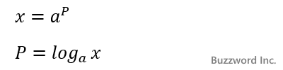
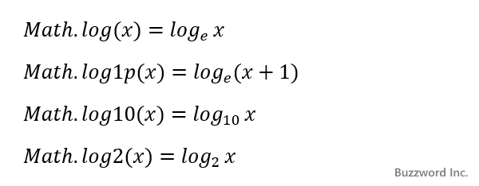

対数関数(Math.log, Math.log10, Math.log2, Math.log1p)
Math オブジェクトで用意されている静的メソッドの中で対数関数に関係する Math.log, Math.log10, Math.log2, Math.log1p メソッドの使い方について解説します。
目次
対数関数の種類と使い方
JavaScript の Math オブジェクトでは対数に関係するメソッドとして次の 4 つが用意されています。
Math.log(x) x の自然対数を返す Math.log1p(x) x の 1 + x の自然対数を返す Math.log10(x) x の 10 を底とした対数を返す Math.log2(x) x の 2 を底とした対数を返す
対数に関する詳しい説明はここでは省略しますが、簡単に書くと x = ap が成り立つ時、 p を x の a を底とする対数と呼びます。 p は a を何乗したら x になるのかを表す数値です。この時 p は次のように表すことができます。

先ほどの 4 つのメソッドはそれぞれ次のような対数を計算するメソッドとなります。

対数の中でもネイピア数である e を底とする対数のことを自然対数といいます。他に 10 を底とする対数のことを常用対数、 2 を底とする対数のことを二進対数と呼びます。ネイピア数の e は Math オブジェクトの静的プロパティとして次のように用意されています。
Math.E 自然対数の底
他にも対数に関係する次のような静的プロパティが用意されています。
Math.LN2 2の自然対数 = loge2 Math.LN10 10の自然対数 = loge10 Math.LOG2E 2を底とするeの対数 = log2e Math.LOG10E 10を底とするeの対数 = log10e
それではそれぞのメソッドについて順に見ていきます。
自然対数を返す(Math.log)
Math オブジェクトの Math.log メソッドは引数の値の自然対数を返します。書式は次の通りです。
Math.log(数値)
引数 x に対する logex を返します。数値が負の値の場合は NaN が返ります。
実際の使い方は次のサンプルをみてください。
Math.log(10); >> 2.302585092994046 Math.log(1); >> 0 Math.log(-10); >> NaN Math.log(Math.E); >> 1
1+xの自然対数を返す(Math.log1p)
Math オブジェクトの Math.log1p メソッドは引数の値に 1 を加えた数値の自然対数を返します。書式は次の通りです。
Math.log1p(数値)
引数 x に対する loge(x + 1) を返します。数値 + 1 が負の値の場合は NaN が返ります。
実際の使い方は次のサンプルをみてください。
Math.log1p(10); >> 2.3978952727983707 Math.log1p(1); >> 0.6931471805599453 Math.log1p(0); >> 0 Math.log1p(-10); >> NaN
10を底とした対数を返す(Math.log10)
Math オブジェクトの Math.log10 メソッドは引数の値の 10 を底とする対数を返します。書式は次の通りです。
Math.log10(数値)
引数 x に対する log10x を返します。数値が負の値の場合は NaN が返ります。
実際の使い方は次のサンプルをみてください。
Math.log10(100); >> 2 Math.log10(10); >> 1 Math.log10(1); >> 0 Math.log10(-100); >> NaN
2を底とした対数を返す(Math.log2)
Math オブジェクトの Math.log2 メソッドは引数の値の 2 を底とする対数を返します。書式は次の通りです。
Math.log2(数値)
引数 x に対する log2x を返します。数値が負の値の場合は NaN が返ります。
実際の使い方は次のサンプルをみてください。
Math.log2(256); >> 8 Math.log2(4); >> 2 Math.log2(1); >> 0 Math.log2(-4); >> NaN
-- --
Math オブジェクトで用意されている静的メソッドの中で対数関数に関係する Math.log, Math.log10, Math.log2, Math.log1p メソッドの使い方について解説しました。
( Written by Tatsuo Ikura )

著者 / TATSUO IKURA
初心者～中級者の方を対象としたプログラミング方法や開発環境の構築の解説を行うサイトの運営を行っています。